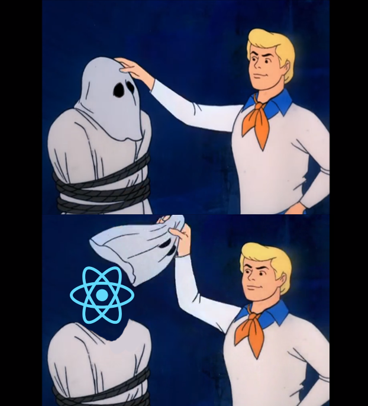

Intro to Vue.js
About me
My name is Pablo Jurado. I am a Front end engineer at Dialexa. I shifted from Visual Design to Software Development.
I am originally from Argentina. I have lived on Maui, Honolulu, Houston, and now Dallas ❤️
About this talk
This is an introduction to some core concepts of the Vue framework. If you are an experience Vue developer, you probably won't learn anything new. This talk is aimed at developers who have never use Vue, to have a general idea of the framework.
Disclaimer
Why do we need Front end frameworks?
Front End Frameworks help us to:
- Make apps more maintainable: easy for you and others to read, test, and change code
- Make reusable components
- Improves DOM manipulations speed
- Typically have good documentation
- Makes easier onboarding/hiring new developers (don't need to teach them your in house Framework)
What makes
 UE different?
UE different?
- You can start using Vue by just adding a script tag.
- The core team is not associated with a big software company like Facebook or Google.
- Has scoped CSS out of the box. (No need for CSS in JS).
- Has State management and Routing included.
{{ message }}
{{ todos.join(" ") }}
{{ message }}
{{ message.split("").reverse().join("") }}
{{ message }}
{{ reversedMessage }}
{{ message }}
Recap
- We create a Vue Instance with data and methods
- We can render and modify data in the templates
- We can change the DOM with directives